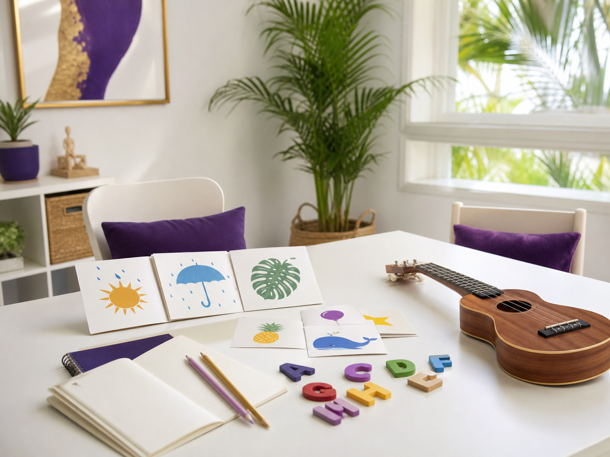

歌手
ライブ・イベント出演
地域のお祭り、企業イベント、商業施設、子ども向けイベントなどで歌唱します。ウクレレ演奏やトークを交えた構成も可能です。
- ライブ・ステージ出演
- ファミリー／子ども向け企画
- 企業・地域イベント
Service
沖縄でのライブ出演からラジオ、ウクレレ・サンレレ演奏まで。目的に合わせた表現をお届けします。
What I Do
企画内容、会場規模、対象年齢に合わせて柔軟にご相談いただけます。
地域のお祭り、企業イベント、商業施設、子ども向けイベントなどで歌唱します。ウクレレ演奏やトークを交えた構成も可能です。

あたたかく親しみやすい声と会話で、番組の空気づくりをお手伝いします。ゲストとのトークやイベントMCもご相談ください。

南国の風を感じるウクレレと、沖縄生まれのサンレレ。会場や企画に合わせて、歌とともにやさしい音色を届けます。

英語を声に出す楽しさや音楽の要素を取り入れた、親しみやすい教室を開講準備中です。詳細は決まり次第お知らせします。
Flow
日時、会場、イベント内容、ご希望を分かる範囲でお知らせください。
目的や客層を伺い、出演内容や構成、条件をご相談します。
会場と連携し、歌と声で心に残る時間をお届けします。